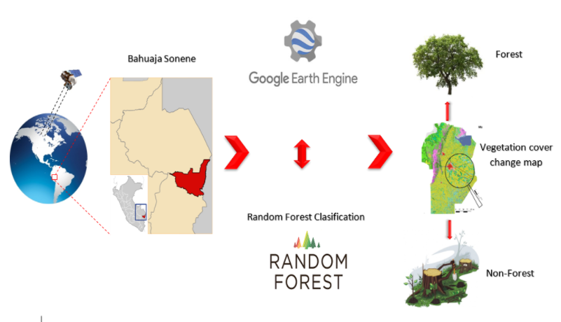
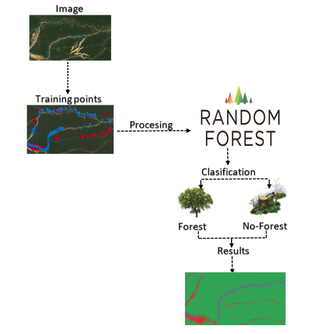

Capítulo 2 Metodología
En este estudio utilizamos imágenes de las misiones Landsat, cabe mencionar que utilizamos las imágenes de Level 1-C que son las que tienen el pre-procesamiento correctamente realizado para el trabajo que nos compete. Añadido a esto utilizamos el algoritmo Random Forest que nos permite realizar la clasificación supervisada de las clases:
- Forest
- Damaged Forest
- Water

Luego se procedió a realizar los puntos de entrenamiento estratégicamente basados en nuestra inspección visual rigurosa.
Figure 2.1: Metodología general

Figure 2.2: Selección de puntos